VCT Analytics
Pipeline completo de datos deportivos: scraping, MySQL, SQL avanzado y dashboards interactivos en Power BI.
Portfolio profesional
Analista de datos certificado en Microsoft Power BI (PL-300). Desarrollo soluciones de datos de extremo a extremo, desde la recopilación y modelado hasta el análisis, automatización y visualización.
Pipeline completo de datos deportivos: scraping, MySQL, SQL avanzado y dashboards interactivos en Power BI.
Análisis de ventas y rentabilidad con Power BI, DAX y transformación mediante Power Query.
Scouting y análisis del Brighton & Hove Albion mediante KPIs, percentiles, visualización y evaluación de perfiles.
Dashboard interactivo desarrollado en Power BI para transformar información comercial en una visión clara de ventas y rentabilidad. El proyecto combina transformación de datos, modelado y lógica analítica para facilitar el seguimiento de indicadores de negocio.
Un caso de Business Intelligence centrado en estructurar datos de negocio y convertirlos en información visual útil para seguimiento y toma de decisiones.
Preparación y tratamiento de los datos con Power Query antes de su explotación analítica.
Construcción de la lógica del informe mediante un modelo de datos y medidas DAX orientadas a indicadores de ventas y rentabilidad.
Diseño de un dashboard interactivo para facilitar la lectura de resultados y el análisis de negocio.
El informe permite analizar ventas, rentabilidad, pedidos, devoluciones, evolución temporal y comportamiento de clientes desde distintas perspectivas. Pulsa cualquier imagen para ampliarla.
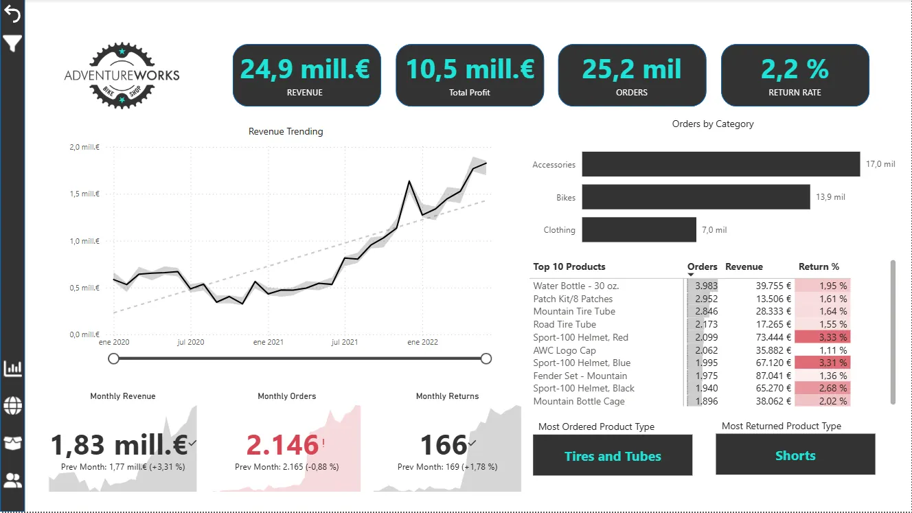
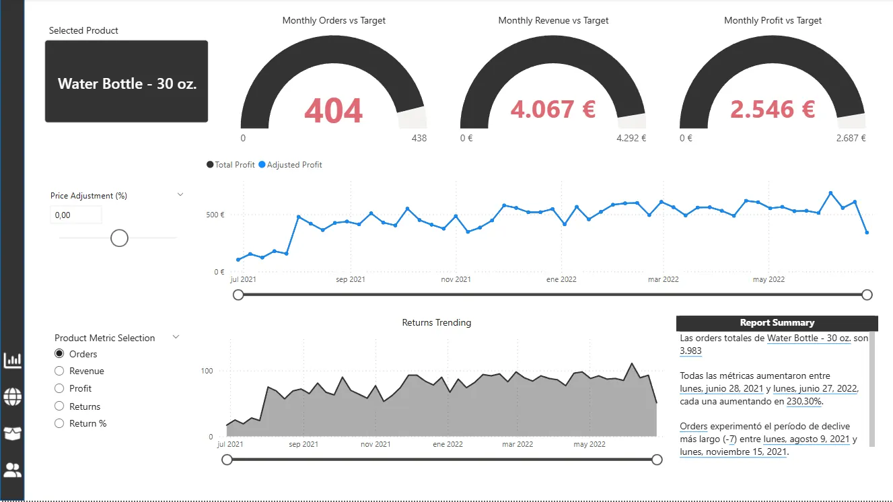
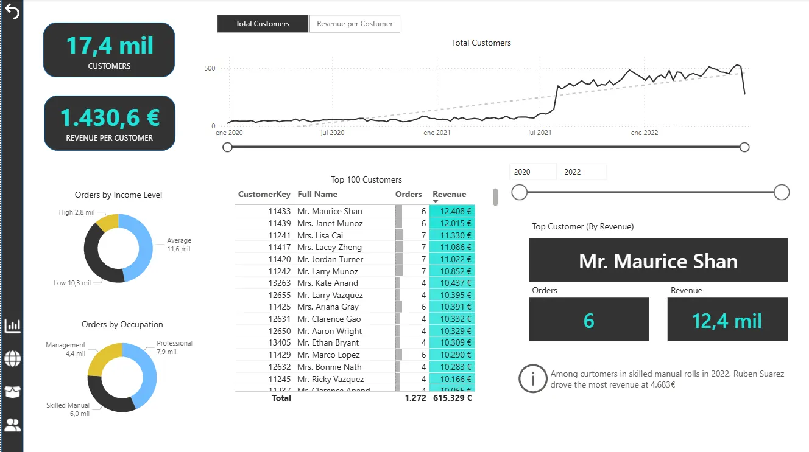
Proyecto de scouting y análisis deportivo desarrollado para el Máster en Big Data Deportivo. El objetivo fue analizar el rendimiento y la estructura de plantilla del Brighton & Hove Albion mediante datos, KPIs, percentiles y visualizaciones orientadas a la toma de decisiones deportivas.
Convertir datos deportivos en una lectura estructurada del equipo y de sus jugadores, combinando análisis colectivo, evaluación individual y scouting para apoyar decisiones sobre rendimiento y necesidades de plantilla.
Evaluación colectiva e individual y comparación entre las temporadas 2022-23 y 2024-25.
Definición y visualización de indicadores por posición para comparar perfiles de jugadores.
Análisis de necesidades, similitud de perfiles, posibles fichajes y evaluación deportiva con contexto de presupuesto.
Una muestra de los análisis desarrollados: evolución del club, diagnóstico estratégico, comparación de perfiles, análisis económico y scouting. El documento completo sigue disponible desde el botón superior. Pulsa cualquier imagen para ampliarla.
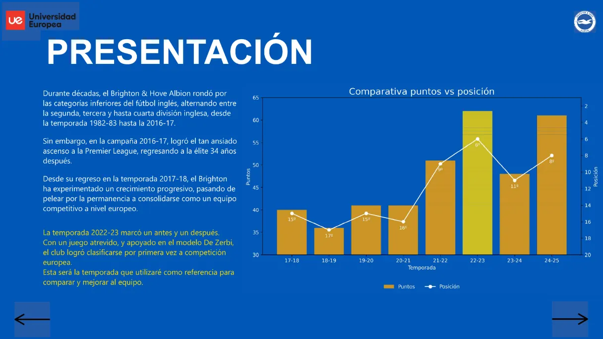
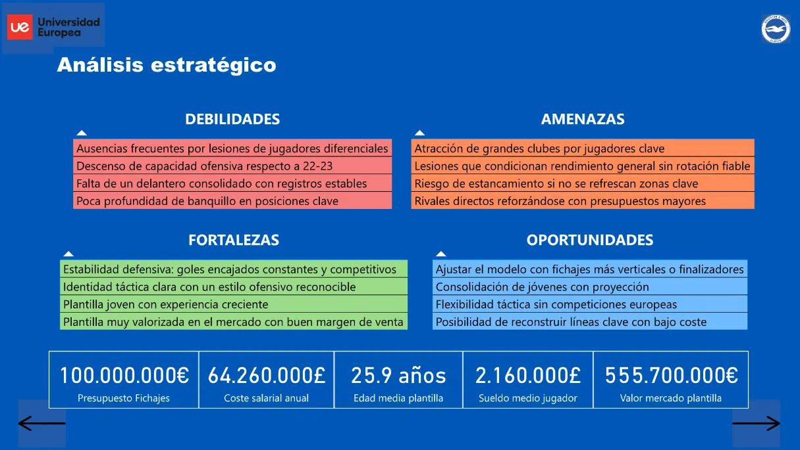
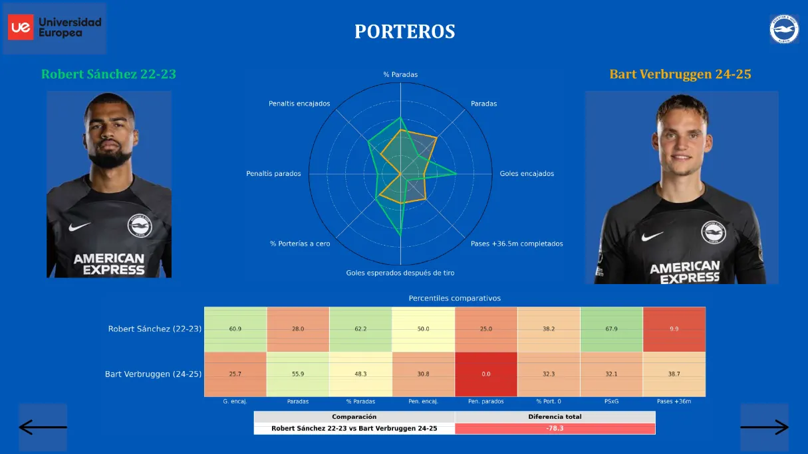
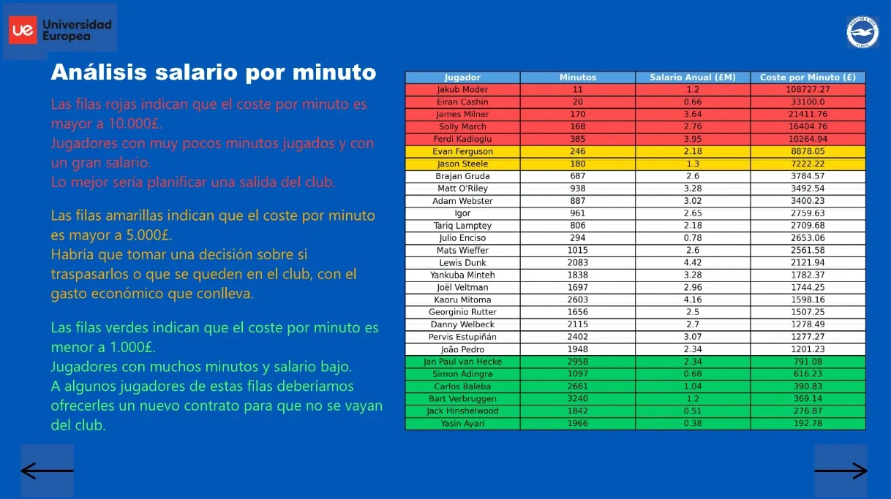
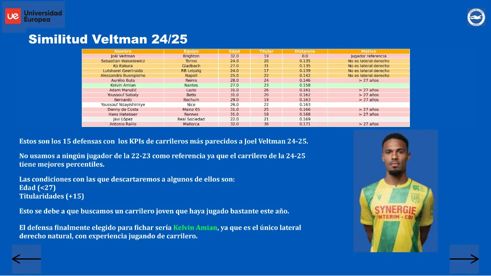
Plataforma independiente de analítica de VALORANT construida y mantenida de extremo a extremo. El proyecto parte de datos públicos obtenidos mediante scraping, los limpia y normaliza con Python, los almacena en una base relacional MySQL y los explota mediante SQL, Power BI y Python para convertirlos en análisis publicados ante una audiencia real.
La base del proyecto no es un dashboard aislado. El trabajo empieza en la captura y validación de datos, continúa en una base relacional y termina en distintas capas de análisis y comunicación.
Para actualizar la base introduzco URLs de partidos individuales o torneos completos. El proceso detecta partidos finalizados, comprueba qué encuentros ya existen y procesa solo los pendientes. La ingestión está dividida en etapas para que un dato ausente en una fuente concreta no inutilice automáticamente el resto del partido.
ids = [c["vlr_id"] for c in candidatos]
cursor.execute(
f"SELECT vlr_match_id FROM matches "
f"WHERE vlr_match_id IN ({marcas})",
tuple(ids),
)
conocidos = {r[0] for r in cursor.fetchall()}
pendientes = [
c for c in candidatos
if c["vlr_id"] not in conocidos
]
Consulta identificadores ya almacenados y construye únicamente la cola de partidos pendientes.
cursor.execute(
"SELECT player_id FROM players "
"WHERE vlr_player_id=%s",
(perfil,)
)
existente = cursor.fetchone()
if existente:
return existente[0]
cursor.execute(
"INSERT INTO players "
"(name, country, vlr_player_id) "
"VALUES (%s,%s,%s)",
(nombre, pais, perfil)
)
Los jugadores se vinculan mediante el ID externo de la fuente, evitando depender exclusivamente del nombre.
if event_type not in ("kill", "plant", "defuse"):
continue
killer = roster.get(str(event.get("by")))
second = rp_segundos_reloj(event.get("t"))
if event_type == "kill":
victim = roster.get(str(event.get("vid")))
killer_pos = posicion(event.get("from"))
victim_pos = posicion(event.get("pos"))
rows.append({
"event_type": event_type,
"round_second": second,
"weapon": weapon,
"killer_x": killer_pos[0],
"killer_y": killer_pos[1],
})
Ejemplo de extracción de tipo de evento, segundo, arma y coordenadas del 2D Replay.
Las salidas de consola permiten comprobar qué se omite, qué se procesa y cuántas filas se insertan en cada bloque.
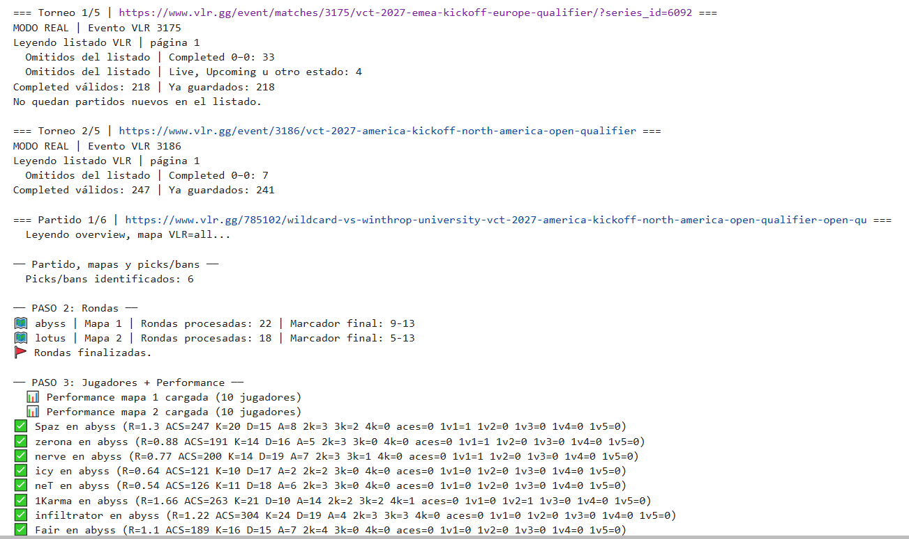
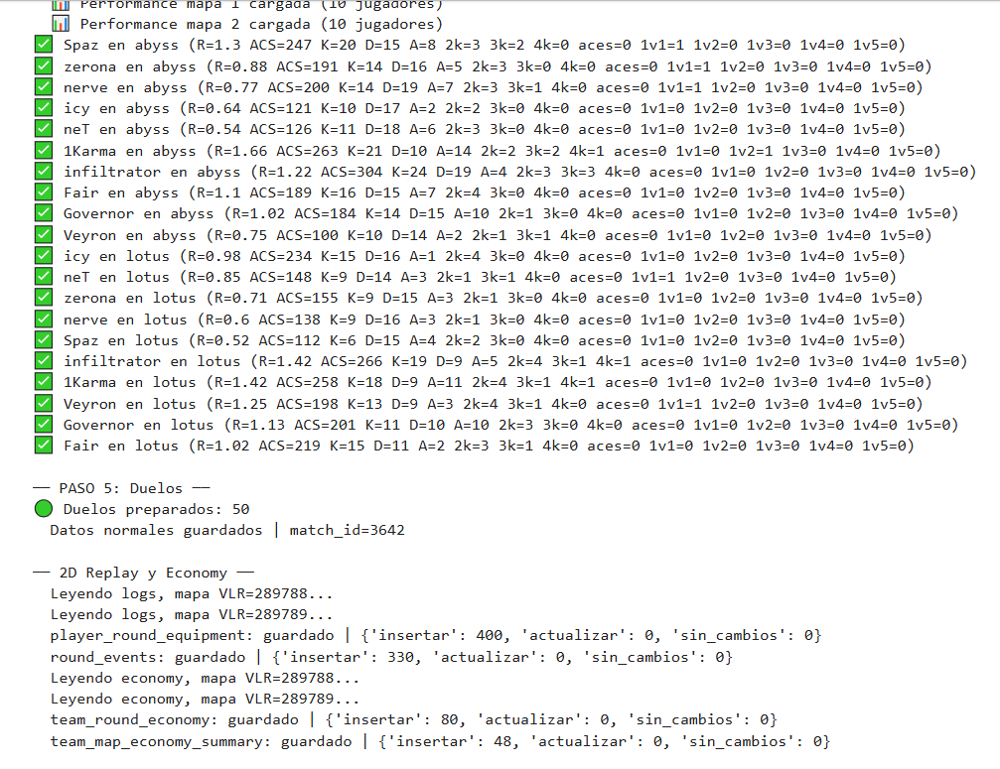
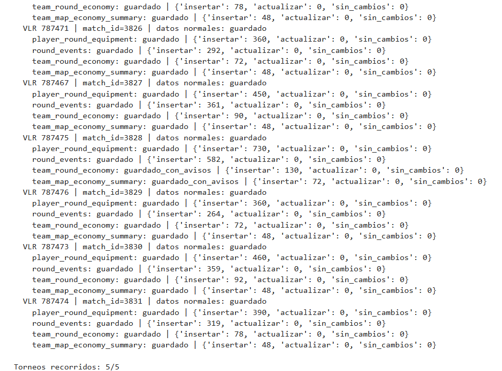
La base está diseñada para poder pasar de una competición completa a un partido, un mapa, una ronda o incluso un evento individual. Las entidades principales se relacionan mediante IDs y claves únicas, evitando depender de textos libres para construir los análisis.
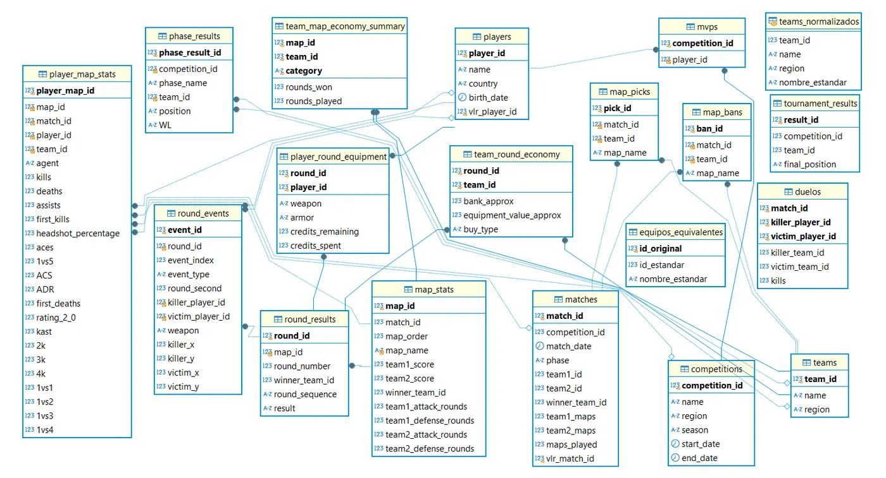
competitions, phase_results y tournament_results guardan temporada, región, fases y posiciones finales.
matches, map_stats, map_picks y map_bans modelan enfrentamientos, marcadores, lados y veto de mapas.
players, player_map_stats, mvps y duelos permiten analizar rendimiento individual y enfrentamientos directos.
round_results, round_events y player_round_equipment bajan el análisis hasta resultado de ronda, acciones, armas, posiciones y equipamiento.
team_round_economy y team_map_economy_summary distinguen pistol, eco, half y full buy, además de conversiones y bonus.
equipos_equivalentes y la capa de teams_normalizados unifican organizaciones que han cambiado de nombre sin perder su histórico.
Mantener una base histórica obliga a gestionar cambios de nombres, jugadores homónimos y fuentes incompletas. Parte del trabajo del proyecto consiste precisamente en conseguir que esos problemas no contaminen los análisis posteriores.
Si un equipo cambia de naming, sus variantes quedan asociadas a un único nombre estándar. Así el histórico se analiza como una misma organización.
La incorporación del identificador del perfil de origen permite separar jugadores por ID y no únicamente por nickname, evitando asignaciones incorrectas.
El scraper se divide por bloques. Si una capa no dispone de datos válidos, se registra el aviso y las demás partes pueden continuar procesándose.
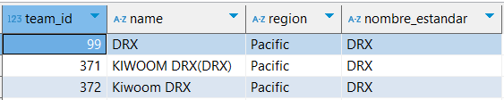
SQL es la capa con la que convierto la base en respuestas: rankings, títulos, mapas extremos, rachas y comparativas. Las consultas combinan JOINs, agregaciones, CASE, CTEs y funciones de ventana.
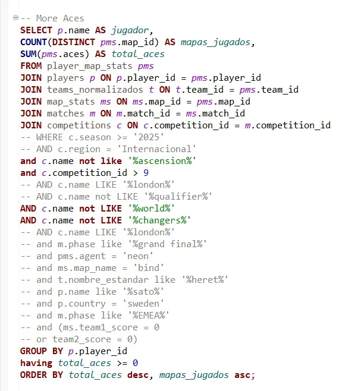
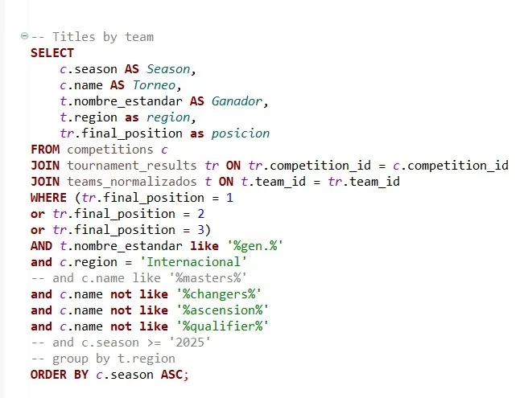
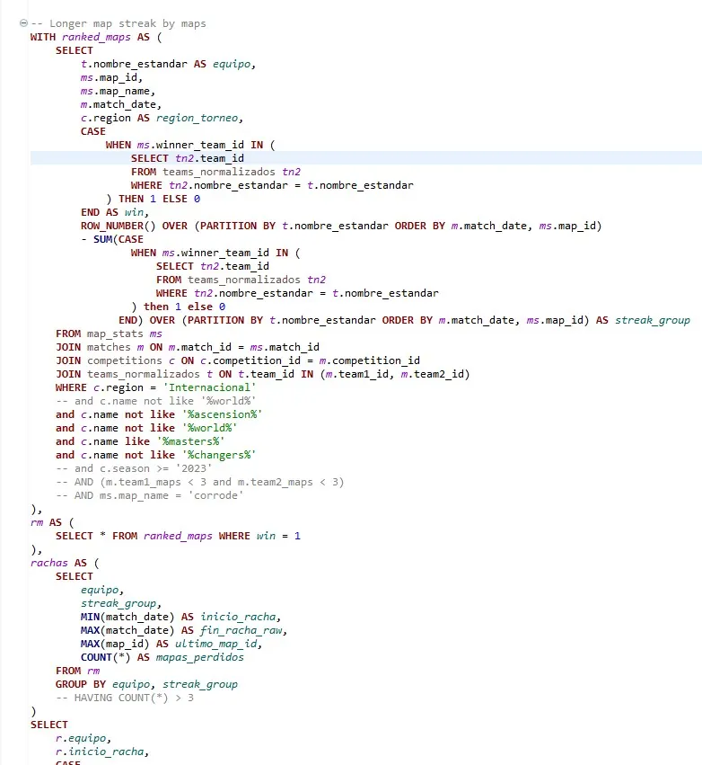
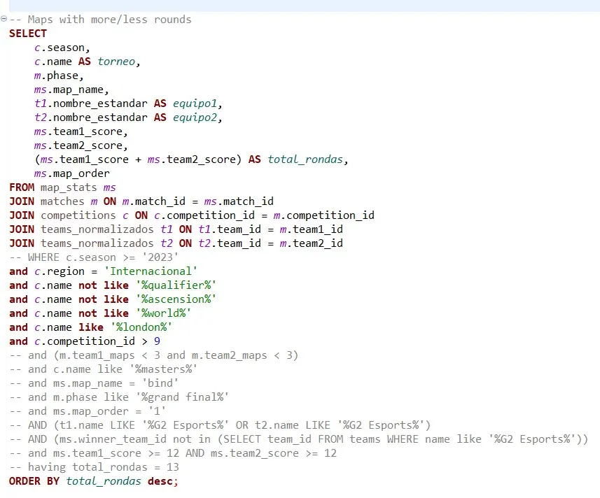
Pregunta real: ¿qué mapas tuvieron más jugadores con K/D negativo?
La consulta cruza estadísticas por jugador y mapa con partidos y competiciones, cuenta jugadores positivos/negativos y recupera los casos extremos.
| Año | Torneo | Equipo 1 | Marcador | Equipo 2 | Mapa | Positivos | Negativos |
|---|---|---|---|---|---|---|---|
| 2021 | Masters Reykjavík 2021 | Version1 | 13–15 | NUTURN | ascent | 2 | 6 |
| 2021 | Masters Berlin 2021 | Sentinels | 13–8 | G2 Esports | haven | 2 | 7 |
| 2021 | Masters Berlin 2021 | F4Q | 4–13 | Sentinels | breeze | 2 | 7 |
| 2022 | Masters Reykjavík 2022 | Paper Rex | 8–13 | DRX | ascent | 2 | 7 |
| 2022 | Champions 2022 | LOUD | 15–13 | OpTic Gaming | ascent | 2 | 6 |
| 2023 | Pacific League 2023 | ZETA DIVISION | 13–8 | Global Esports | haven | 2 | 6 |
| 2023 | EMEA League 2023 | MKOI | 6–13 | FUT Esports | icebox | 2 | 6 |
| 2023 | Pacific League 2023 | Team Secret | 13–11 | DetonatioN FocusMe | ascent | 2 | 5 |
| 2023 | Pacific League 2023 | ZETA DIVISION | 8–13 | TALON | haven | 2 | 6 |
| 2023 | Pacific League 2023 | TALON | 13–8 | Gen.G | fracture | 2 | 7 |
Power BI está conectado a la base para ofrecer una capa de análisis visual con filtros por temporada, región y torneo. DAX aporta la lógica de negocio del informe y Power Query se utiliza como capa final de transformación cuando hacen falta cambios de nombres, eliminación de columnas, divisiones o ajustes previos al modelo.
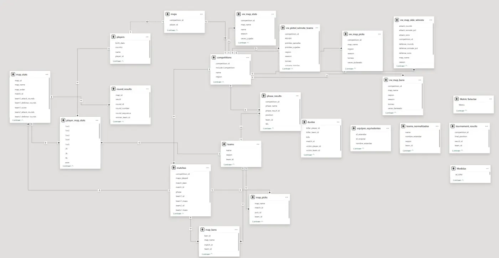
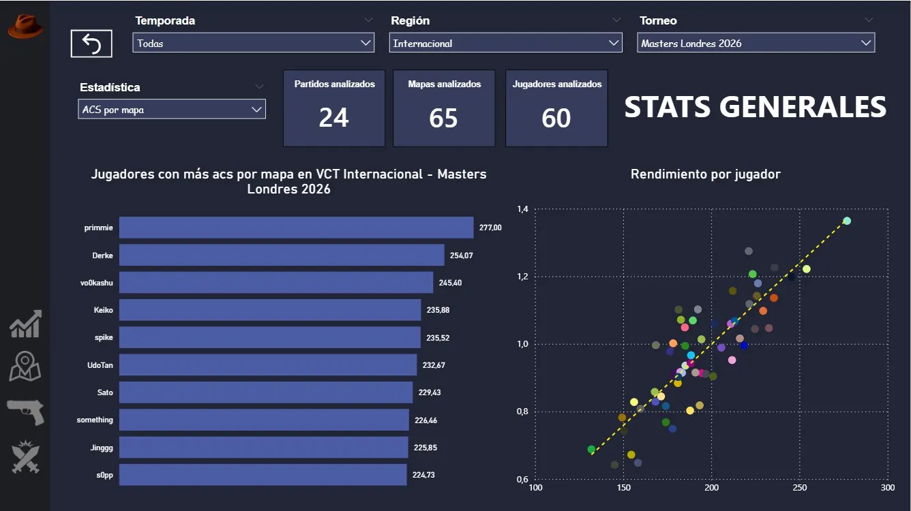
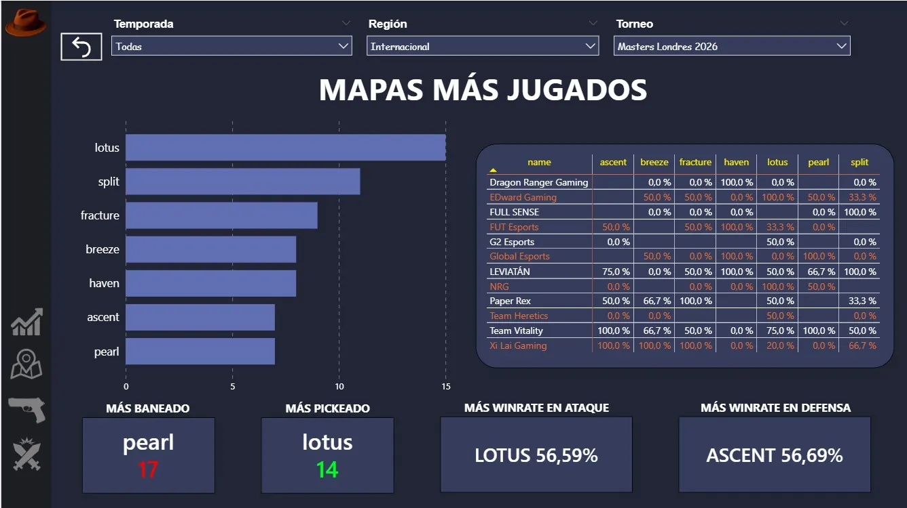
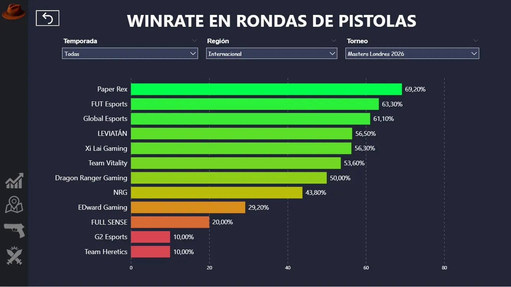
Desde agregaciones simples hasta títulos dinámicos que reaccionan a los filtros activos del informe.
Bans Mapa Más Baneado =
VAR Tabla =
TOPN(
1,
SUMMARIZE(
vw_map_bans,
vw_map_bans[map_name],
"Bans", [Total Bans]
),
[Bans],
DESC
)
RETURN
MAXX(Tabla, [Bans])
Total Kills =
SUM(player_map_stats[kills])
Winrate % =
DIVIDE(
SUM(vw_pistol_winrate_teams[winrate_pistolas]),
100
)
Dynamic Title =
VAR Metric =
SELECTEDVALUE('Metric Selector'[Metric], "estadísticas")
VAR Seasons =
IF(
ISFILTERED(competitions[season]),
CONCATENATEX(
VALUES(competitions[season]),
competitions[season],
", "
),
""
)
VAR Regions =
IF(
ISFILTERED(competitions[region]),
CONCATENATEX(
VALUES(competitions[region]),
competitions[region],
", "
),
""
)
VAR Tournaments =
IF(
ISFILTERED(competitions[name]),
CONCATENATEX(
VALUES(competitions[name]),
competitions[name],
", "
),
""
)
RETURN
"Jugadores con más " &
LOWER(Metric) &
IF(Regions <> "", " en VCT " & Regions, "") &
IF(Seasons <> "", " (" & Seasons & ")", "") &
IF(Tournaments <> "", " - " & Tournaments, "")
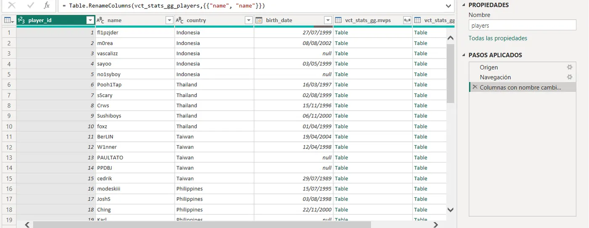
La mayor parte de la limpieza estructural se realiza antes de llegar a Power BI gracias a la propia base de datos. Cuando el informe lo necesita, Power Query se utiliza para renombrar campos, eliminar columnas innecesarias, dividir información y preparar tablas para el modelo analítico.
No todos los análisis terminan en un dashboard. Para publicaciones concretas también utilizo Python y Matplotlib para convertir resultados en piezas visuales adaptadas al formato de OvertimeVCT.
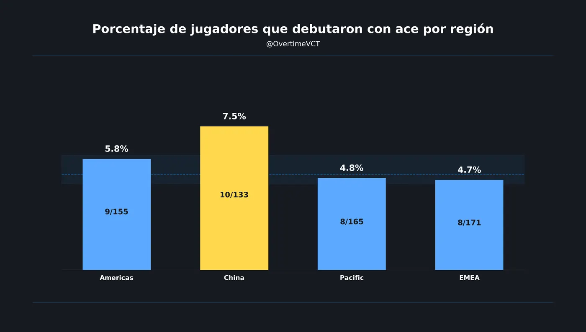
labels = [d["region"] for d in datos]
porcentajes = [d["porcentaje"] for d in datos]
bars = ax.bar(
np.arange(len(labels)),
porcentajes,
width=0.58,
color=colores_barras
)
for i, bar in enumerate(bars):
ax.text(
bar.get_x() + bar.get_width()/2,
bar.get_height() + 0.28,
f"{porcentajes[i]:.1f}%",
ha="center",
fontweight="bold"
)
plt.savefig(output_path, dpi=300, bbox_inches="tight")
La base no existe únicamente como ejercicio técnico. Desde ella genero ideas, rankings, comprobaciones históricas, gráficos y guiones que terminan publicados en OvertimeVCT. Ese ciclo obliga a mantener los datos actualizados, detectar errores y responder preguntas nuevas de forma continua.
La misma base se utiliza para comprobar récords, contextualizar carreras y recuperar datos históricos para publicaciones. Estas son tres piezas reales construidas a partir del trabajo analítico.
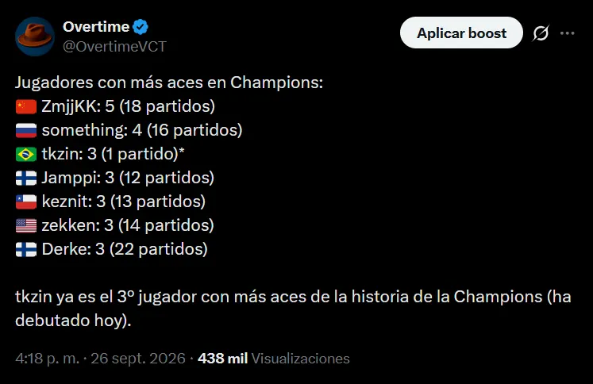
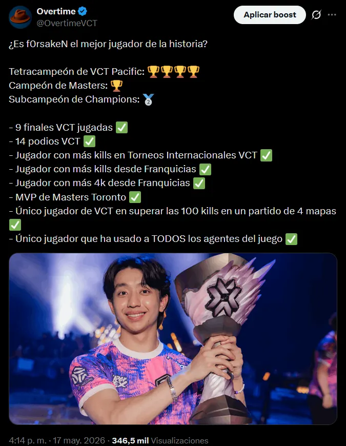
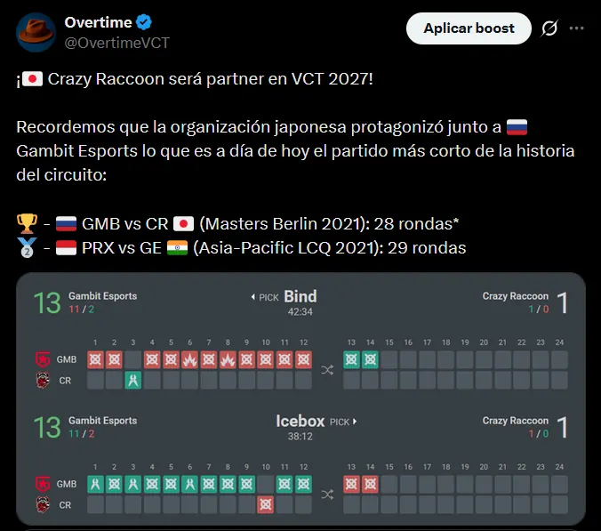